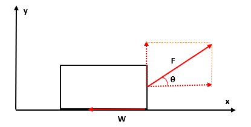

運動の法則
物体の運動を論じる古典力学は、Newtonが著した「プリンキピア」の導入部分に掲げた3つの法則に基づいている。ここでは、その3法則を当時の表現（特に第2法則の表現）に若干手を加えた形で紹介することにしよう。
-
慣性の法則
すべての質点はそれに加えられた力によってその状態が変化させられない限り、静止あるいは1直線上の等速運動の状態をつづける。 -
運動方程式
質点の運動量（=質量×速度）の変化は、加えられた力の方向に沿って起こり、微小時間内における運動量の単位時間あたりの変化の大きさは加えられた力の大きさに等しい。 -
作用・反作用の法則
全ての作用に対して、等しくかつ反対向きの反作用が常に存在する。すなわち、互いに働きあう2つ質点の相互作用は常に等しく、かつ反対方向へと向かう。
全ての物体は、他の物体の影響が完全にない状況において運動状態を変えることなく、その状態をいつまでも持続するであろう。多くの経験から予想されるこのような物体の性質を慣性（inertia）という。この性質があるということを第1法則で掲示した上で、外部からの影響が働いた時の運動の変化を第2、3の法則により述べている。これらを質点で言い換えると、質点の運動状態はその速さと運動方向（速度ベクトル）を指定することにより決定されるわけであるから、すべての質点は単独で速度ベクトルを変えずに保とうとする性質を持つといえる。すなわち、運動する質点の速度ベクトルの変化を追うことで第2法則により質点に働く刻々の力を求めることはできる。ただ、それだけだと質点の運動状態の変化を力という言葉に置き換えただけに過ぎないため、力学現象をより深く理解することには何等寄与もしていない。そのため、色々な運動の度重なる観測に基づいて、どのような種類の力がどのような状況のもとで働くのかを予め調べる必要が出てくる。Newtonが発見した万有引力の法則は、その一つの例であるといえる。そして、現在ではそれらの力（既知の力）のもとに質点の運動を第2法則から予測することが可能となっている。
では、いよいよ第２法則の解析的表現に取り組むことにしよう。まず、速度 で動いている質量 の質点の運動量を
によって定義する。この量は質点に力 が働くとき変化するが、両者の間には
という関係が成り立つ。これがNewtonの第二法則の内容である。この式に運動量の定義式を代入すると
となるが、仮に質量が時間によって変化しない（時間に依存しない）場合は、左辺の第一項目が消えて加速度を とすると
という、よく教科書などで見られる方程式が得られる。このときの質量に関する仮定は大抵の場合正しいが、ガスを噴射しながら進むロケットの本体に着目する場合などには適用できないことに注意されたし。また、我々が力についての具体的な知識を十分持っており、力 の形が既知のものであれば、この式により速度あるいは位置が求められる。つまりは、その運動が求まることになるため、通常この式は運動方程式と呼ばれる。
ここからは、運動方程式を解くには既知の力が必要であることを述べたので、実際にどのような力があるのか見ていくことにしよう（どの位置にいるか見る必要がないため、ここでは質点ではなく実際の物体を扱っている）。
-
事象1（水平な地面に置かれた物体）

何もしていない状態だと静止し続ける。そこに下図のように力をかけ続けると動き始め、この様子を運動方程式を用いてみる。
このことから、方向に対しては の加速度で進むが、 方向へは一定の速度（今は静止したまま）で動くことが分かる。だが、すぐ動き出すわけではなく最初はある程度静止し続けてから動き出す。これは、摩擦力 が働いているものと考える。
-
事象2（事象1と同様な状況で角度 だけ傾けて力をかけた場合）

先ほどと同様な考え方で
となるわけだが、もしこの力だけ存在するならば方向へ加速していくものと考えられる。しかし、実際はそうはならず静止したままである。そのため、下向きにも力が働くことが予想される。ただ、この場合だと地面が邪魔でどのような力が働いているかわからないため、次に持ち上げた状態から離した場合にどのような力が働くのかを見てみる。
-
事象3（落下運動）

物体を持ち上げて離すと落下するわけだが、このとき重力 （地球と物体の間に働く万有引力の一種）が働いている。そのため、このときの運動方程式は以下の形になることが分かる。
この重力が働くということを踏まえて、改めて先ほどの状況を考えてみる。この場合だと、重力と上にひく力が釣り合っていると思えるが、すると何も力が働いていないときに静止していることの説明がつかない。そのため、重力により下へ引き付けることで地面へ力がかかり地面から反発力（反作用）が働くものと考えられる。
-
事象4（事象2に重力を考慮した場合）
改めて事象2を重力を考慮して記述すると以下のようになる。

以上のように、運動を観測することでどのような力が働いているのか予測することが可能ではあるが、実際にどのような値をとるかは調べる必要が出てくる。例えば、摩擦力 の場合は先ほどの 方向の運動方程式において
とあるように外部の力と同じであるが、いつまでもそうではなく限界値（最大静止摩擦力）が存在する。最大静止摩擦力は静止摩擦係数 （床の材質などで決まる）により となる。これを超えて動き出すと動摩擦力が働き、この大きさは動摩擦係数 により となる。また、重力 の方は万有引力の一種であり、 重力加速度 により というように書けるが、この値というのは地球の質量、物体と地球との間の距離、万有引力定数をそれぞれ とすると
という関係にある。ここで の値は
から計算すると というように、よく知られた値になることも分かる。ただ、厳密には物体間の距離 で変化するものとなっているため、次頁では二体間ではどのような運動になるか論じていくことにしよう。